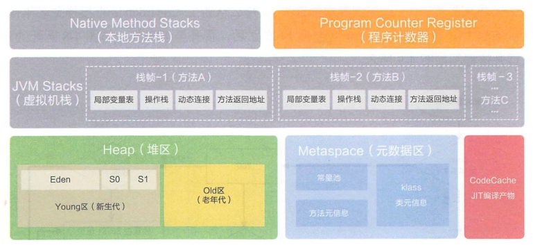
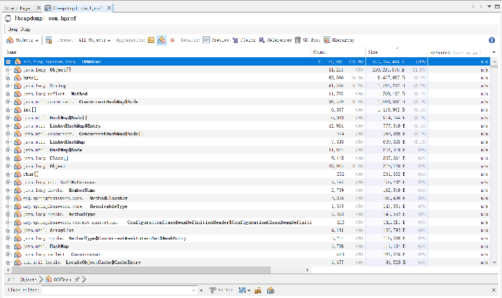
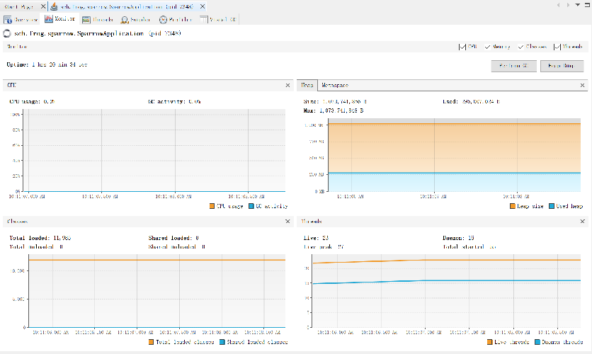
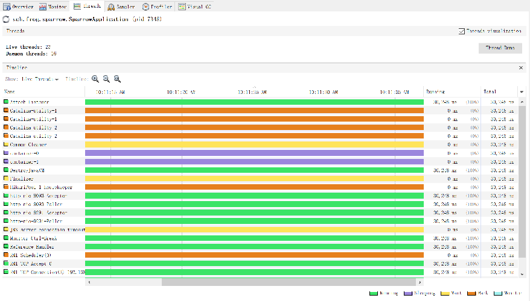
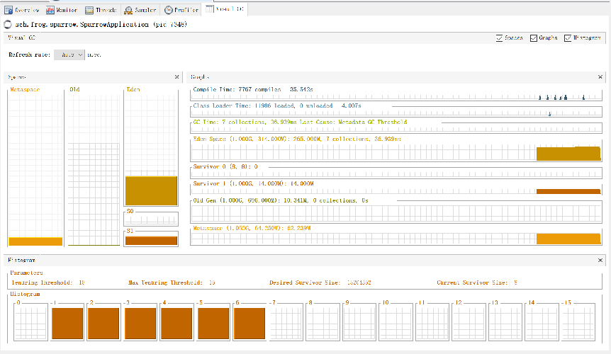

本文由阅读《深入理解java虚拟机-JVM高级特性与最佳实践 第3版》整理来.
什么是JDK? JDK包含: 1. java程序设计语言; 2. java虚拟机; 3. java类库.
运行时数据区:

直接内存: 除了上面运行时数据区, 还有一部分内存频繁使用, 就是直接内存, 用于NIO中对流式数据进行存取, 避免了复制到堆中导致的不必要开销. 有点类似DMA的意思.
关于方法区, 现在常提到元空间, 实际上元空间就是方法区的一种实现方式. 此外, 运行时常量池也是方法区的一部分, 也存放在元空间中, 但是这里不包含字符串常量池, 字符串常量池在堆中.
介绍一下上面各个区域的内存中的数据都是怎么来的.
方法区中还有一部分数据需要额外说明一下, 那就是通过动态代理以及字节码技术生成的大量动态类.
现在类信息已经加载到了方法区(元空间)了, 接下来, 就可以通过new,反射,反序列化等方式, 创建一个对象了.
检查类是否加载. java虚拟机在遇到一条new指令时, 会先检查常量池中是否存在符号引用, 以及符号引用所代表的的类是否已经被加载/解析/初始化, 如果没有先执行上面的类加载个过程.
在堆中分配一块内存. 有了类型信息, 就可以确定下来这个对象所占用的内存大小了, 假如是xKb, 那么, 我们就需要在堆内存中为这个对象分配一块xKb的空间. 分配的方案有两种:
Serial, ParNew等垃圾收集器带有空间压缩整理的能力, 使得内存时规整的, 所以使用碰撞指针的方案. CMS基于清除算法, 不会对空间进行整理, 所以采用空闲列表的方案.
不论是哪种分配方案, 当多个线程并发的申请堆内存的时候, 都会涉及到内存资源的竞争. 这时, 虚拟机采用CAS加失败重试的方式来请求空间, 除此之外, 还有本地线程分配缓冲区(ThreadLocalAllocationBuffer), 这个是每个线程在堆中开辟的一小块线程私有区域, 分配内存时, 优先使用这块区域, 这样就不存在资源竞争了.
对象在堆中的内存布局分为三部分: 1. 对象头; 2. 实例数据; 3. 对齐填充.
对于对象头, 又分为两部分:
对于实例数据, 就是一个对象中所有成员变量的数据了, 总共就8中类型, 每一种类型字段的大小都是固定的:
对于对齐填充, 就是一段空闲的区域, 因为Hotspot虚拟机需要使得每个对象的起始地址都是8bit的整数倍.
上面实例数据中提到了对象引用, 通过对象引用, 就可以在堆中找到所引用的对象了. Hotspot虚拟机通过对象引用进行访问定位的方式是直接指针, 所以这里的对象引用中存储的就是内存中的一个地址.
上面介绍了java的内存区域, 以及内存中的数据是怎么来的, 接下来介绍一下它们是怎么没的--垃圾收集.
对于虚拟机栈/本地方法栈/程序计数器, 生命周期是和线程绑定的. 栈帧随着方法的结束也就释放了. 所以这几个区域不需要回收. 需要回收的是: java堆和方法区.
下面主要介绍堆的回收, 方法区在最后补充, java堆垃圾回收的过程总共分两步: 1. 找到已死对象; 2. 回收它.
如何找到已死对象?
一个对象如果不再被存活的对象引用着, 则就是已死对象. 判断对象已死方案有二:
java虚拟机都是采用"可达性分析"来判断对象是否可以被回收的. 可达性分析总共分两步: 1. 找到对象图的根(GC Root); 2. 由对象图的根遍历整个对象图;
GC Root有以下几个:
那么, 遍历完对象图, 找到不可达对象, 就可以回收了吗? java中还存在一个方法finalize(), 对于实现了finalize()方法的对象, 第一次判定为不可达之后, 是不回收的, 而是先执行一遍finalize()方法. 然后在下一次判定为不可达的时候回收.
上面, 我们完成了对已死对象的寻找, 接下来, 开始回收.
如何回收?
垃圾收集算法就三种:
上面是三种垃圾收集算法, 没有一个是完美的方案, 都是时空权衡问题. 实际上, 每种算法都有用武之地, 它们可以分别应用到不同的场景中. 合在一起, 就可以很好地完成工作了, 这就引出了分代收集理论.
分代收集理论
分代收集理论依据两个假说:
依据这两个假说, 可以把java堆划分成为两个区域: 1. 新生代; 2. 老年代. 不同的区域, 使用不同的垃圾收集算法. 每次回收只回收一个代.
基于分代收集理论的垃圾收集方案
因为新生代对象大部分朝生夕死, 所以每次回收可以空出大部分内存空间, 只有一小部分对象保留. 所以新生代这样设计: 将新生代又分为1个Eden和2个Survivor区. 新创建的对象都在Eden区进行分配. 每次新生代采用"标记-复制"算法回收时, 对Eden和其中有对象的Survivor区进行回收, 得到存活的对象放入空闲的那个Survivor区.
那么, 如果空闲的Survivor装不下怎么办? 这时, 装不下的对象直接进入老年代.
老年代中的对象都是存活了很久的, 根据"强分代假说"它们大部分还会继续存在下去. 所以每次回收空闲出来的空间不会很多. 所以"标记-清除"算法就很合适, 当然, 标记整理算法也可以.
分代回收策略一些细节
可达性分析中遇到的问题
前面介绍了根节点从哪些地方可以得到, 有了这些GC Roots, 就可以进行可达性分析了. 但是, 这时面临下面两个问题:
上面理论已经有了, 基于上面的理论, 就有了下面这些垃圾收集器的实现:
| 垃圾收集器 | 收集算法 | 描述 | 适用代 | 可搭配使用的收集器 |
|---|---|---|---|---|
| Serial | 标记-复制 | 单线程垃圾收集器 | 新生代 | Serial Old |
| ParNew | 标记-复制 | Serial的多线程版本, 并行的执行垃圾收集 | 新生代 | CMS |
| Parallel Scavenge | 标记-复制 | 和ParNew一样并行执行垃圾收集, 吞吐量优先 | 新生代 | Serial Old/Parallel Old |
| Serial Old | 标记-整理 | 单线程垃圾收集器 | 老年代 | Serial/Parallel Scavenge |
| Parallel Old | 标记-整理 | 多线程并行执行垃圾收集 | 老年代 | Parallel Scavenge |
| CMS | 标记-清除 | 以获取最短停顿时间为目标的收集器 | 老年代 | ParNew/Serial Old |
| Garbage First | 整体上标记-整理,局部标记-复制 | 优先回收收益最大的region | 新生代&老年代 | - |
| Shenandoah | 整体上标记-整理,局部标记-复制 | 和G1相似, 但是支持并发整理 | 暂时不分代 | - |
| ZGC | 整体上标记-整理,局部标记-复制 | 有region, 采用了染色指针 | 暂时不分代 | - |
| Epsilon | 不收集垃圾 | 不收集垃圾 | 不收集垃圾 | - |
可搭配使用的收集器列, 这里是jdk9以后, jdk9之前, 还可以有一些其他的搭配
上面的垃圾收集器, 有些已经很久远了, 逐渐被淘汰, 这里简单介绍: CMS, G1, Shenandoah, ZGC.
CMS
执行过程:
需要注意的:
Garbage First
特点:
执行过程:
需要注意的:
Shenandoah
特点:
执行过程:
需要注意的:
ZGC
特点:
执行过程:
需要注意的:
常用的工具有:
jps
示例:
PS C:\Users\frogif> jps -l
6868 D:\Software\FrogJson\FrogJson-0.1.exe
18332 jdk.jcmd/sun.tools.jps.Jps
主要选项:
-l: 输出主类全名, 如果是可执行jar, 输出jar包路径-m: 输出虚拟机进程启动时, 传递给主类main()函数的参数-v: 输出虚拟机进程启动时的jvm参数jstat
示例:
PS C:\Users\frogif> jstat -gcutil 6868
S0 S1 E O M CCS YGC YGCT FGC FGCT CGC CGCT GCT
0.00 100.00 22.22 4.05 94.34 85.92 3 0.013 0 0.000 2 0.002 0.015
PS C:\Users\frogif> jstat -gc 6868
S0C S1C S0U S1U EC EU OC OU MC MU CCSC CCSU YGC YGCT FGC FGCT CGC CGCT GCT
0.0 2048.0 0.0 2048.0 73728.0 18432.0 176128.0 7132.8 29232.0 27576.8 4480.0 3849.1 3 0.013 0 0.000 2 0.002 0.015
以上是jdk11执行结果 S0 - survivor0(占比0%), S1 - survivor1(占比100%), E - Eden(占比22.22%), O - 老年代(占比4.05%), M - 元空间(占比94.34%), CCS - 压缩使用比例(85.92%), YGC - Young GC次数, YGCT - Young GC总耗时(0.013s), FGC - Full GC次数, FGCT - Full GC总耗时(0s), CGC - 并发GC次数, CGCT - 并发GC总耗时(0.002), GCT - 总垃圾收集时间(0.015s). S0C - survivor0总大小, S0U - survivor0使用大小, 等等.
主要选项:
-gc: 监视java堆状况, 如上示例-gcutil: 监视java堆状况, 如上示例-gccause: 同gcutil, 只是多输出了上次gc原因-class: 监视类加载卸载数量, 总空间, 以及类装载所耗时间如果想定期刷新, 示例如下(每1000ms查询一次, 共查询5次):
PS C:\Users\frogif> jstat -gcutil 6868 1000 5
S0 S1 E O M CCS YGC YGCT FGC FGCT CGC CGCT GCT
0.00 100.00 25.00 4.05 94.34 85.92 3 0.013 0 0.000 2 0.002 0.015
0.00 100.00 25.00 4.05 94.34 85.92 3 0.013 0 0.000 2 0.002 0.015
0.00 100.00 25.00 4.05 94.34 85.92 3 0.013 0 0.000 2 0.002 0.015
0.00 100.00 25.00 4.05 94.34 85.92 3 0.013 0 0.000 2 0.002 0.015
0.00 100.00 25.00 4.05 94.34 85.92 3 0.013 0 0.000 2 0.002 0.015
jmap
示例:
PS C:\Users\frogif> jmap -dump:live,format=b,file=D:/work/aaa.dump 6868
Heap dump file created
这个示例指定了live, 则只dump存活对象; format=b是固定的; 如果已死对象也dump, 则:
jmap -dump:format=b,file=D:/work/bbb.dump 6868
主要选项:
-dump: 生成java堆转储快照-histo: 显示堆中对象统计信息, 包括类, 实例数量, 合计容量-F: 如果dump没有响应, 强制执行执行-dump时, 如果后面带有live, 会触发一次fullgc. 比如上面那次执行之后, 再执行一下jstat -gccause可以看到Heap Dump Initiated:
PS C:\Users\frogif> jstat -gccause 6868
S0 S1 E O M CCS YGC YGCT FGC FGCT CGC CGCT GCT LGCC GCC
0.00 0.00 0.00 37.60 94.64 85.16 3 0.013 1 0.018 2 0.002 0.033 Heap Dump Initiated GC No GC
jstack
示例:
jstack 6868 > stack.out
实际命令是
jstack 6868, 后面的> stack.out是操作系统的命令, 表示将输出内容重定向到stack.out这个文件中. 如果不加, 就直接输出到控制台了.
主要选项:
-F: 当正常输出请求不被响应时, 强制输出-l: 除堆栈外, 显示关于锁的附加信息-m: 如果调用到本地方法的话, 可以显示C/C++的堆栈visualvm
.\visualvm.exe --jdkhome "C:\Program Files\Java\jdk-11.0.2"分析一个dump文件:

分析运行中的程序的性能(对运行中的程序会产生影响, 生产环境慎用):


可以安装一些插件(Tools - Plugins). 这里安装VisualGC试试:

对于虚拟机故障处理的一些心得:
两个十分有用的工具网站:
| 配置 | 解释 |
|---|---|
| -XX:+/-UseTLAB | 是否开启TLAB, 默认开启 |
| -Xms2g | java堆最小值(这里配置的是2G) |
| -Xmx2g | java堆最大值(这里配置的是2G) |
| -Xmn1g | 新生代大小 |
| -XX:NewRatio=4 | 新生代和老年代的大小比值, 如果设置了Xmn, 则以Xmn为准 |
| -Xss256K | 为每个线程分配的虚拟机栈内存大小(这里配置的是256k), 默认1M(Hotspot中并不区分虚拟机栈和本地方法栈) |
| -XX:+HeapDumpOnOutOfMemoryError | 使得内存溢出时, dump出当前堆转储快照 |
| -XX:HeapDumpPath="aaa/dump.hprof" | 指定dump文件位置 |
| -XX:MaxMetaspaceSize=512m | 设置元空间最大值, 默认是-1, 即不限制 |
| -XX:MetaspaceSize=512m | 设置元空间的初始大小, 一旦达到该值, 就会触发垃圾收集以及类型卸载,默认值20.79M |
| -XX:MinMetaspaceFreeRatio=40 | 元空间垃圾回收后, 控制最小的元空间剩余容量百分比, 默认40%, 可减少由于元空间不足导致的垃圾收集频率 |
| -XX:MaxDirectMemorySize=10m | 直接内存最大值, 默认和-Xmx保持一致 |
| -Xlog:[selectors]:[output]:[decorators]:[output-options] | 输出jvm日志, 例如:-Xlog:gc*:file=gc.log |
| -Xverify:none | 禁用字节码验证 |